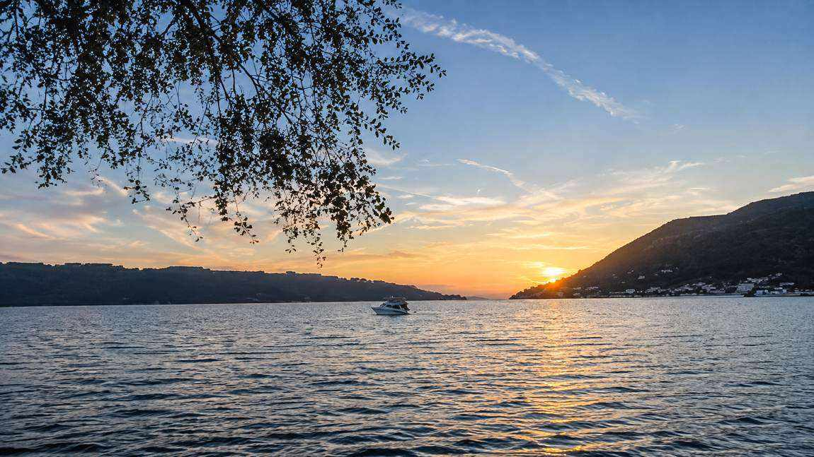
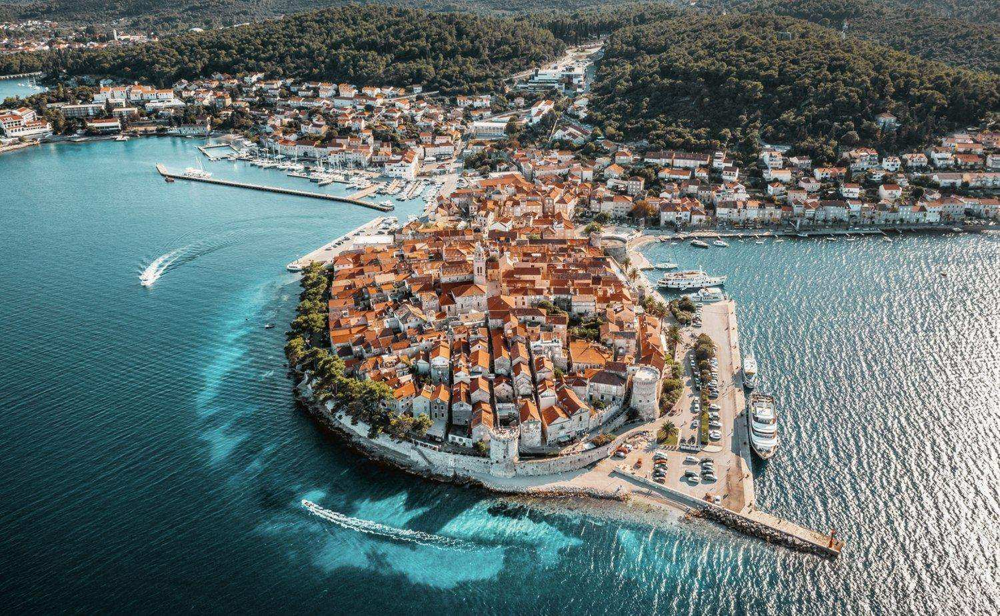

Korčula Old Town is just a 20-minute ferry ride away, with the ferry leaving from outside the nearby supermarket, only a 2-minute walk from Villa Rosa. Wander its beautiful medieval streets, stop for lunch or drinks along the waterfront, and explore the historic old town and its museums. It’s an easy trip across the water and an absolute must during your stay.

Day trips to secluded island restaurants are easy to arrange by water taxi or private boat — just let us know and we can help put a day together.
Airport transfers, car hire, wine tours and boat hire can all be arranged with advance notice — just send us a message before you arrive.
Send an Enquiry →